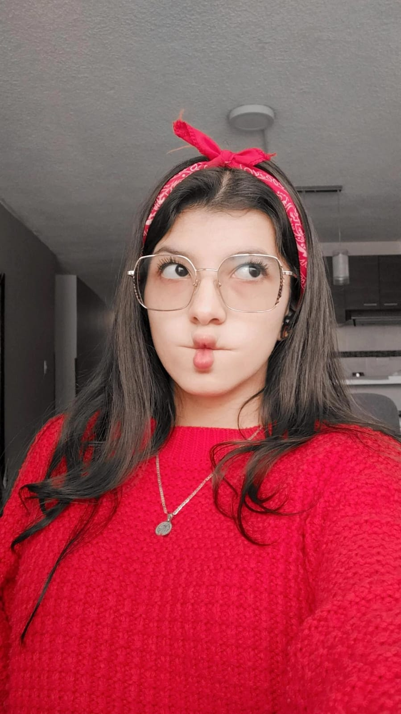
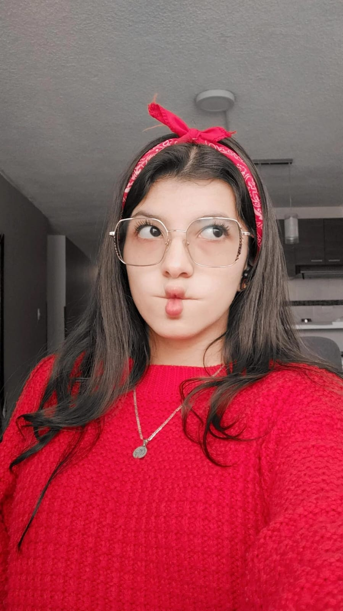

Te amo
Al tulipán que floreció ante mí,
pondría oro en su delicado tallo.
Maravilloso e inigualable es,
su fragancia deseo por toda la vida.
Jardines de Recuerdos
Un día planté un recuerdo de ti,
tu rostro formando constelaciones frente a mi.
Permíteme plantar una flor por cada lágrima,
y un día este jardín será tuyo.
Haré los preparativos y construiré una casa,
donde los cuadros atesoren nuestro ser.
Siéntate entre las margaritas,
compartamos todas esas mañanas.
Y si descubres una flor nueva cada día,
es porque la planté con el recuerdo de tu sonrisa.
Si tenemos flores de todos los colores,
préstame tus labios para conocer nuevas tonalidades.
Porque aquí, en este jardín rebosante de esperanza,
plantaré una flor por cada parte que amo de ti.
Y así, al verte en el jardín,
el amor perdurará en tu eterna fragancia.


 
